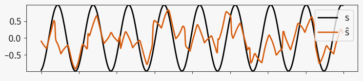

Getting the argument names of a function
Is it possible to get the names of the variables given as positional arguments to a function? Yes, though it is a bit of a hack and probably nothing for real systems in production.
Why?
My use-case is as follows: I have a plotting function which takes a variable number of signals and plots them in an organized little plot:
def plot_data(*signals: torch.Tensor):
...
The organization of those plots I can infer from the data, but it would also be nice to label the plots with a legend. The pythonic way to do this, is either to accept another argument with a list of labels or give the signals in a dictionary with the labels as the keys. But I am lazy, my thesis code can be as experimental as I want it to be and my variable names are already descriptive enough. Therefore I want to somehow retrieve the given variable names as they are in the code.
plot.plot_data(s, ŝ)

How?
First to note: Variables are passed by assignment in Python. A variable in Python represents a binding to an object (everything in Python is an object). Giving an argument to a function merely creates another binding to the same object, mutable or immutable. The new function-scope variable to that object does not know about the upper scope variable binding to the same object. There is no connection between these two and therefore there is no internal correct way to connect to that name.
Without an actual correct way to do it, we have to do it the ugly,
dirty way: Look at the source code to get the names. Luckily this is
supprisingly easily done with the inspect module
from the Python standard library. inspect allows us to get
information about objects as they lie on the Python execution stack. Running:
import inspect
print(inspect.stack())
Will give something along:
[FrameInfo(frame=<frame at 0x7fd80164c450, file './test.py', line 6, code <module>>, filename='./test.py', lineno=6, function='<module>', code_context=['print(inspect.stack())\n'], index=0)]
We get an ordered list of FrameInfo objects, starting from the
current scope going up the call stack. FrameInfo is a named tuple
and contains the function name of the current scope (which this
being run in the global scope is just <module>) and the source
code of this execution in code_context. The only optional argument
.stack(context=1) can set the number of lines around the current
position we are ineterested in. One is enough for our case.
So we should be able to get the parameters of our function call by looking at the stack going one scope up, wich is where we called this function and parsing the line of source code for the names:
code_line = inspect.stack()[1].code_context[0]
And yes that works! First caveat: the function call shall only be one line, because we only have one line of context, buy hey I said this was hacky. Second, now we have a string akin:
variable = something(func(a, b, sum((c, d)))) + 1
Where we are only ineterested in the arguments of func. Therefore
we need some RegEx magic to extract them. First we can use inspect again to
fetch the name of the current function:
func_name = inspect.stack()[0].function
Easy right? Next we use a regular expression to extract the string between the
parentheses behind the func_name and than another regular
expression to split the argument list at the commas. Just using normal string
.split(',') is not enough here as we want to only split on the
most-outer commas.
import re
argument_string = re.search(rf"{func_name}\((.*)\)", code_line)[1]
arguments = re.split(r",\s*(?![^()]*\))", argument_string)
And that’s basically it. For convenience I want this to be in its own function that I can call from another function. Luckily it is really easy to adapt for this. Where do get the correct function name and source code line from, if we are currently in a function inside the function of interest? Yes, exactly, they are just one step higher in the stack. We just have to increase the index our lookups in the stack by one and it works. To sum up:
def get_func_arguments():
func_name = inspect.stack()[1].function.strip()
code_line = inspect.stack()[2].code_context[0].strip()
argument_string = re.search(rf"{func_name}\((.*)\)", code_line)[1]
arguments = re.split(r",\s*(?![^()]*\))", argument_string)
return arguments
With that I can now call:
plot.plot_data(s, μ_ŝ, mean(x, dim=1))
and inside use our new function to label the plots;
def plot_data(*signals: torch.Tensor):
arguments = get_func_arguments() # = ['s', 'μ_ŝ', 'mean(x, dim=1)']
plt.figure()
for signal, name in zip(signals, arguments):
plt.plot(signal, label=name)
plt.legend()
Again, be advised this is a little dirty trick, which probably can fail in dozen of ways that I do not know about and I would not recommend messing with your call stack in a production live systems. It is pretty neat though 👍.